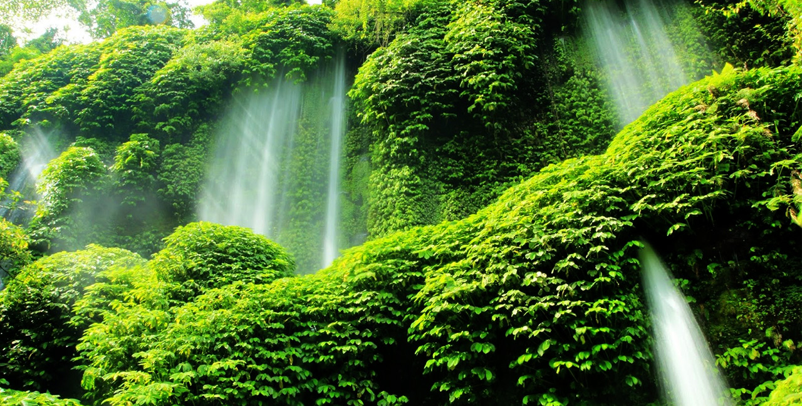

Air Terjun Benang Kelambu
Post by dayat, Sunday 06 Juny 2018
Ada beberapa cara untuk berbasah-basah ria di tempat wisata di Pulau Lombok ini. Anda bisa bermain Air di pantai Lombok, atau bisa juga dengan mengunjungi air terjun. Jangan salah, Anda bisa mendapatkan semuanya di Pulau Lombok ini. Jika Anda menginginkan suasana yang sejuk dan segar sembari bermain air, maka wisata alam air terjun adalah tempat yang tepat untuk Anda kunjungi.
Anda bisa mengunjungi beberapa air terjun di Pulau Lombok. Beberapa diantaranya berada di kaki Gunung Rinjani. Jika Anda ingin melihat air terjun yang menakjubkan, coba kunjungi Air Terjun Benang Kelambu. Karena mungkin saja air terjun ini merupakan air terjun yang terindah di Indonesia yang pernah Anda lihat.
Air Terjun Benang Kelambu adalah air terjun yang paling terkenal di Pulau Lombok. Wisata alam air terjun ini berada di kaki Gunung Agung, tepat di tengah-tengah Pulau Lombok. Air Terjun Benang Kelambu terletak sekitar 32 Kilometer dari Kota Mataram, atau sekitar 1 jam perjalanan. Anda bisa menempuh jalur Mataram-Narmada-Sedau-Pancor Dau-Teratak-Desa Aik Berik. Disarankan agar Anda bertanya pada penduduk setempat mengenai lokasi air terjun ini. Karena hanya ada satu tanda jalan menuju Air Terjun Benang Kelambu. Atau Anda juga bisa menanyakan pada petugas hotel atau agen tur.
Di pintu masuk air terjun ini, Anda hanya perlu membayar Rp. 5.000,- untuk masuk ke lokasi air terjun. Setelah Anda melewati gerbang masuk, Anda akan disambut dengan pepohonan yang rindang serta suasana yang damai dan sejuk. Jalan menuju ke lokasi air terjun sudah dibangun sedemikian rupa, sehingga Anda bisa menuju ke air terjun dengan nyaman. Di sepanjang sisi jalan Anda bisa menemui warung-warung yang menjual makanan ringan dan minuman. Anda juga bisa mencicipi Nasi Kaput, sejenis nasi campur yang dengan bungkus kertas.

Di sepanjang jalan menuju air terjun, Anda akan disuguhkan dengan pemandangan hutan lindung yang lebat. Hutan ini merupakan bagian dari Taman Nasional Gunung Rinjani. Mayoritas flora yang tumbuh di area ini adalah tumbuhan tropis. Seperti Pohon Bajur (Pterocarpus sp.), Pohon Ipil (Insia biyuga), Pohon Sentul (Sondarium), dan Pohon Jati (Tektona grandis). Meskipun lebat dan rimbun, Anda tidak perlu khawatir akan tersesat.
Jangan lupa untuk membawa minuman, karena Anda akan berjalan sejauh 500 Meter untuk mencapai lokasi air terjun. Di tengah perjalanan Anda akan mendengar suara gemuruh air terjun. Namun jangan salah, itu adalah suara gemuruh dari Air Terjun Benang Setokel. Ya, di lokasi ini terdapat dua air terjun. Anda bisa mampir sejenak di Air Terjun Setokel ini.
Menurut masyarakat setempat, nama Tiu Kelep diambil dari bahasa Suku Sasak yang berarti “Kolam Terbang”. Air terjun ini dipercaya dapat menyembuhkan berbagai penyakit, serta membuat tampak awet muda. Masyarakat setempat juga percaya bahwa aliran air terjun akan semakin besar jika orang-orang disekitarnya berbicara semakin keras.
Air Terjun Benang Setokel Lombok“Benang Setokel” dalam bahasa lokal memiliki arti “seikat benang”. Dinamai demikian karena bentuknya yang menyerupai ikatan benang. Air terjun ini memiliki dua terjunan, dengan ketinggian masing-masing sekitar 20 Meter. Airnya sangat jernih dan segar. Di bagian dasar air terjun terdapat cekungan yang besar dan cukup dalam. Sehingga untuk Anda yang bernyali, Anda bisa melompat dari pucuk air terjun ke kolam yang jernih dan segar tersebut. Dari kolam tersebut, air kemudian mengalir melalui sungai. Karena jernihnya, Anda bisa melihat dasar sungai. Jika Anda berkunjung bersama buah hati, Anda bisa mengajaknya bermain di sungai. Sungai ini cukup dangkal dan tenang. Sehingga putra-putri Anda bisa ikut merasakan kesegaran airnya.
Setelah menikmati Air Terjun Benang Setokel, Anda bisa melanjutkan perjalanan ke Air Terjun Benang Kelambu dengan berjalan kaki sejauh 1 Km. Namun jangan khawatir, Anda akan berjalan dibawah rerimbunan hutan. Di bagian sisi yang lain, Anda akan menemui area perladangan masyarakat setempat yang ditanami dengan berbagai tanaman. Seperti Nangka, Pisang, Kopi, dan lain sebagainya. Jika Anda tidak membawa makanan, Anda bisa membelinya di warung-warung di dekat gerbang masuk Air Terjun Benang Kelambu. Sekitar 100 Meter sebelum lokasi air terjun, jalanan mulai menanjak. Anda harus menaiki anak tangga. Di sisi anak tangga Anda bisa melihat parit dengan air yang jernih.
Sesampainya di lokasi, Anda akan terpana dengan Air Terjun Benang Kelambu yang begitu indah. Pada air terjun ini, air seolah-olah keluar dari rimbunan tumbuhan. Sebenarnya air terjun ini berasal dari banyak mata air, yang keluar langsung melalui celah-celah di sepanjang tebing. Namun karena tebingnya tertutup dengan tumbuhan yang tumbuh subur, terlihat seakan air keluar dari rimbunan tumbuhan tersebut. Air terjun ini dinamai Air Terjun Benang Kelambu karena terjunan airnya yang berbentuk seperti kelambu. Air terjun ini memiliki 3 tingkat. Tingkat yang paling atas berasal langsung dari mata air, dan memiliki ketinggian sekitar 30 Meter. Tingkat yang kedua merupakan lanjutan dari tingkat pertama, dengan ketinggian sekitar 10 Meter. Tingkat yang ketiga memiliki ketinggian hanya 5 Meter.
Tak seperti Air Terjun Benang Setokel, Air Terjun Benang Kelambu tidak memiliki kolam. Sehingga Anda hanya bisa berbasah-basah di bawah terjunan. Namun yang menarik adalah Anda bisa langsung meminum airnya, karena air tersebut langsung berasal dari mata air. Air tersebut kemudian mengalir ke sungai yang ada di bawah air terjun. Menjauh sedikit dari air terjun, Anda bisa beristirahat di bebatuan sembari menikmati kesejukan dan keindahan pemandangan sekitar. Di tempat inilah titik terbaik untuk melihat dan menikmati pemandangan Air Terjun Benang Kelambu yang mengagumkan.
Sumber : http://id.lombokindonesia.org/air-terjun-benang-kelambu/
Rekomendasi Tempat Wisata
Air Terjun Oi Marai
Pantai Pink Lombok
Air Terjun Tiu Kelep
Gili Trawangan
Pulau Moyo